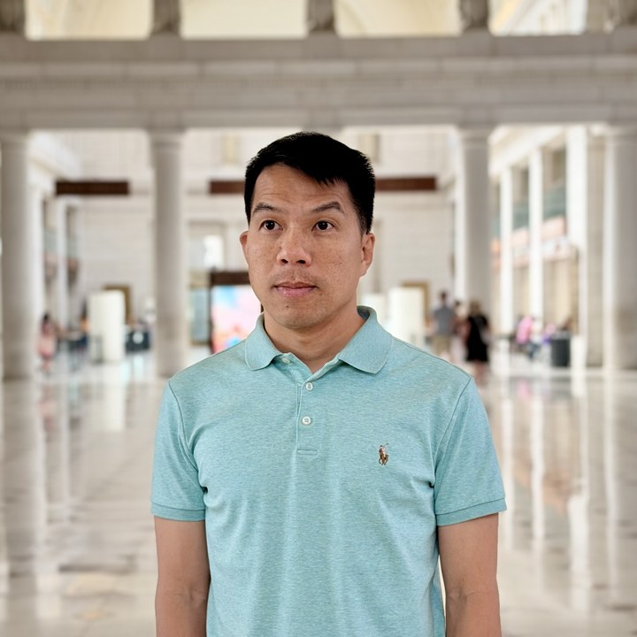

I'm a Principal Research Scientist at NVIDIA's Cosmos Lab, building world foundation models for Physical AI. Previously I led work on autonomous driving at NVIDIA — BEV perception, online mapping, and end-to-end models — bridging research and production. PhD in Computer Vision from Adelaide; Google PhD Fellow (2012); Heidelberg Laureate Forum (2013).
Awards
- 2017 1st place, Amazon Robotics Challenge — with the ACRV team.
- 2016 Best Centre Citizen, Australian Centre for Robotic Vision.
- 2014 Dean's Commendation for Doctoral Thesis Excellence, University of Adelaide.
- 2013 Invited to the Heidelberg Laureate Forum — one of ~200 young researchers selected worldwide.
- 2012 Google PhD Fellowship in Computer Vision.
- 2012 Google Travel Grant.
- 2011 Google Travel Award for NeurIPS 2011.
- 2010 Adelaide Scholarships International — full PhD scholarship (2010–2014).
- 2008 Brain Korea 21 Scholarship (2008–2009).
News
- 2026 Co-author on Cosmos 3 — Omnimodal World Models for Physical AI. project · pdf
- 2026 Joined the Cosmos Lab at NVIDIA, working on Physical AI — bringing perception, reasoning, and action together into systems that act in the real world.
- Oct 2025 Co-author on Cosmos-Predict2.5 — World Simulation with Video Foundation Models for Physical AI. arxiv
- Apr 2024 Promoted to Principal Research Scientist at NVIDIA.
- Dec 2023 NVAutoNet accepted to WACV 2024. arxiv · video
- Jun 2018 Joined NVIDIA as a Senior Computer Vision Scientist.